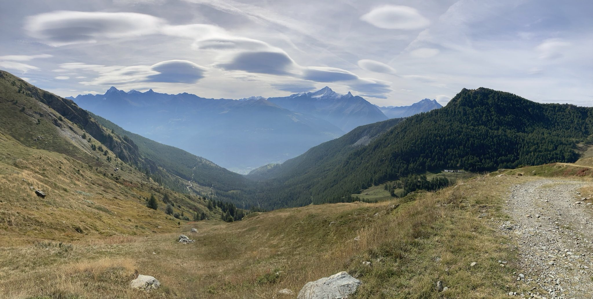

Aosta & Chamonix
- Country: France & Italy
- Category: Hike
- Project date: 26 September 2021 | 1 October 2021
- Maps & Codes: None
Mont Blanc, what a view !
We spent a total of 4 days in Chamonix in the summer of 2021.
We can only advise you to get more information (I mean deeply) before your departure. Indeed, depending on the time of year, some activities are already closed/not open yet.
Moreover, for more savings, we advise you to buy a multipass for a day for 60€ (or even 3 days, slightly more expensive).
This is a budget for a day, certainly not for everyone. However, it will give you access to a lot of features !
We leave you with the following information: Website activities in Chamonix or MultiPass and Mont Blanc
Among the features mentioned, we have done :
Visit City of Chamonix
This first one is not included in MultiPass of course, as this is just the tour of the town itself. But this is still an incredible town, very typical of the mountains/Alps of French side, and really situated at the foot of the Mont Blanc massif, although many Airbnb's including the cheaper ones, have a view of Mont Blanc.
Train du Montenvers | Mer de Glace
The typical and ultra charming little red train offers an excellent ride (20-30 minutes) to see the Mer de Glace.
We were not able to visit the ice cave which was closed at that time, but go there if possible !
In compensation we were able to observe the Mer de Glace, and become more and more aware of the climate warming...
The 520 step walk is largely doable on foot, when the lift is out of order. We also met a punk à chien as we say in French, with whom we had a good chat and which were really kind. He was eventually smoking some 'herbs' in front of the Mer de Glace, but his 2 pitbulls were very friendly !
Téléphérique de l'aiguille du Midi | Montblanc
Once the summit is reached, after the two lifts in very stylish cabins, it is a huge slap in the face. You can admire the Mont Blanc and its chain from almost every angle: above the void, through the large windows and even a direct access to the snow open to all ... provided you are equipped with crampons if you want to hike beyond the tourist structure.
There are many activities to do once up there, from the museum, to the restaurant terraces, the excavated tunnels, the panoramas, etc... This place alone is worth the price of the MultiPass.
Special mention should be made of Le Pas dans le Vide, which is an entirely glassed-in room, from floor to ceiling, and allows the visitor to live a unique experience: under his feet, a void of more than 1000m. From this glass room, the visitor's gaze takes in the highest peaks in Western Europe, and the exceptional Bossons glacier.
Website Aiguille du Midi
Saint Bernard
The Saint Bernard is a breed of very large (70kg !) working dog from the Western Alps in Italy and Switzerland. They were originally bred for rescue work by the hospice of the Great St Bernard Pass on the Italian-Swiss border. The breed has become famous through tales of Alpine rescues, as well as for its large size, and gentle temperament.
Well it's simple, one of the last Saint Bernards refuge in France is available not far from Chamonix ! With beautiful dogs and a visit with an explanation of the history of the breed and its evolution through this family of enthusiasts.
This refuge is located in Les Houches, by train, and again with MultiPass the journey from the TER (french name of the train) line to Saint Gervais is free, and takes about 30 minutes. Bring cash, 5 € per person.
Big doggos bois
Aosta
The rest of the trip continued in Aosta. We spent our 2 day short stay in Aosta, in a very charming house.
To book La Maison Nouva : La Maison Nouva
We did not meet Angelica (which often seems to be the case for many travellers in view of their professional activity), however we met her delightful mother, Mama Teresa !
Teresa is the sweetest and loveliest lady you could meet. She took us around and showed where everything was. She spoke neither English nor French or even Spanish, but our Italian language skills worked wonders (no.) (actually, few words we used were enough to exchange on the modalities of the stay and sympathize briefly with her).
It‚Äôs a really nice and homely property, up a hill, very peaceful. And the view from the balcony is simply breathtaking, as you can see on this pic. This view, together with the more than reasonable price, makes this modest but ideal house well worth it. The TV allowed us to discover a very nice program: Fatto a casa per voi üëç.
This house is located at 45 minutes walk from the ultra centre of Aosta and its shops.
Stop by Gros Cidac for your shopping, we can't explain it, but we have wonderful memories of this hypermarket.
(Damn this pic is so cheap, I love Gros Cidac so much again)
By car you will be within reach of everything in a few minutes. We chose the difficulty and my God the slopes on the outskirts of Aosta (on the Sarre side: Small wiki ) are steep. This didn't stop us from doing a 50km hike the next day, but that's the subject of the next paragraph.
The famous 50km hike, followed by a 10km round trip to the most lost restaurant in Aosta, but the closest to La Maison Nouva, in order to taste 3 delicious pizze for 2, at the end of a car park at 10pm. This hike had made us hungry.
This last one was done in about 10 hours, starting at 6am and returning home at 4pm. A good 1h30 break at the top to have lunch, alone in the world, as seen in pic. With regular breaks. No need for much preparation, the slopes are steep in one direction ok... but still affordable, and good internet coverage will help you find your way quickly.

A small visit to a cow isolated from its herd made the walk very joyful. This one was adorable and very friendly. A sociable cow, although the area is quite remote.
The map is available below, feel free to ask for its GPS plot version in comments on the homepage, we would provide it on Github.